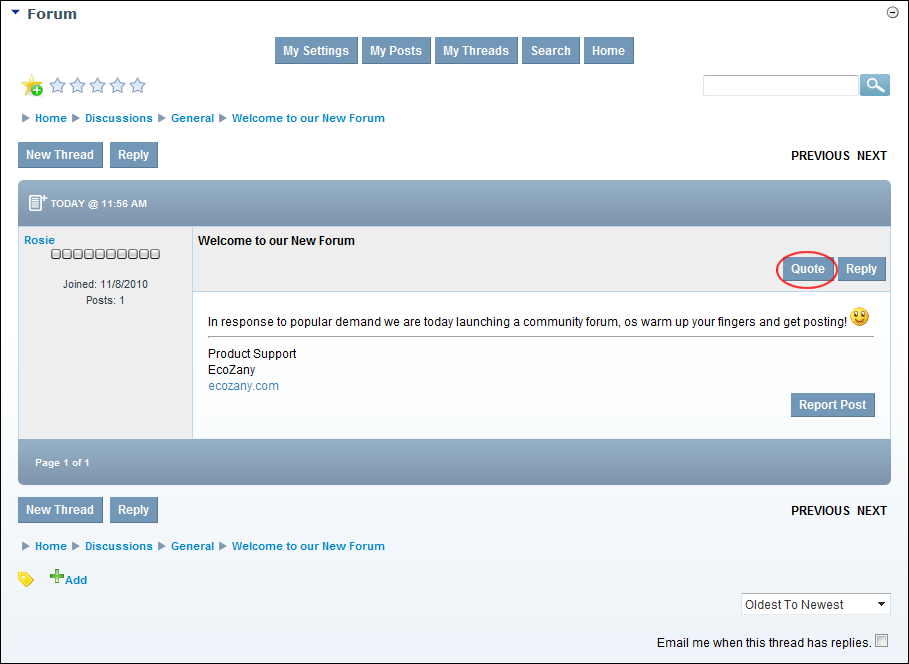
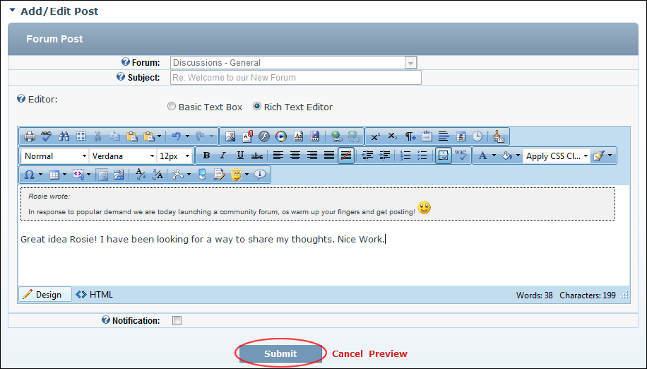

Quoting a Post
How to quote an existing forum post when replying it on the Forum module. Quoting adds the name of the poster and the content of the post to the post you are adding.
- Locate and open the required post. See "Viewing any Post"

- Click the Quote link located to the right of the post title. This opens the Add/Edit Post page which displays the quoted post in the Editor.
- In the Editor, add your post in reference to the quote.
- Optional. At Notification, if you wish to receive an email when the post has a response.

- Click the Submit link. If the post does not require moderation it is immediately added to the forum and is now displayed to you. If the post requires moderation a message is displayed explaining the moderation process.

The Quoted Post